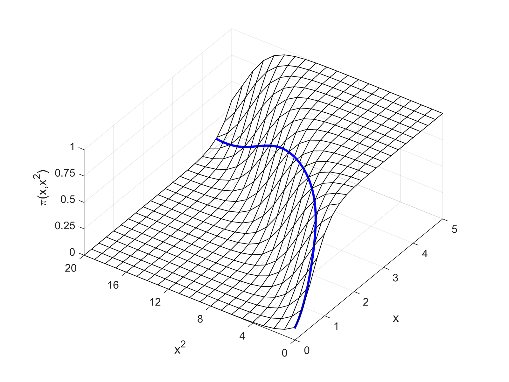
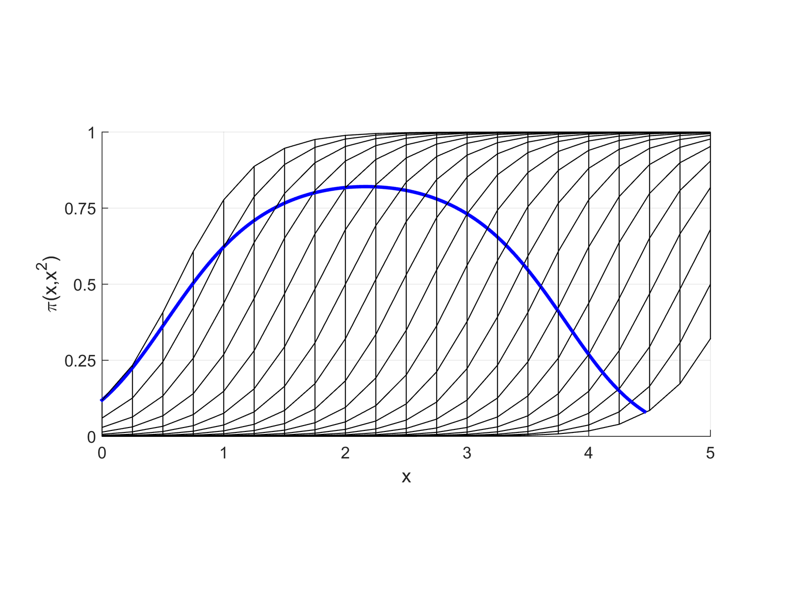
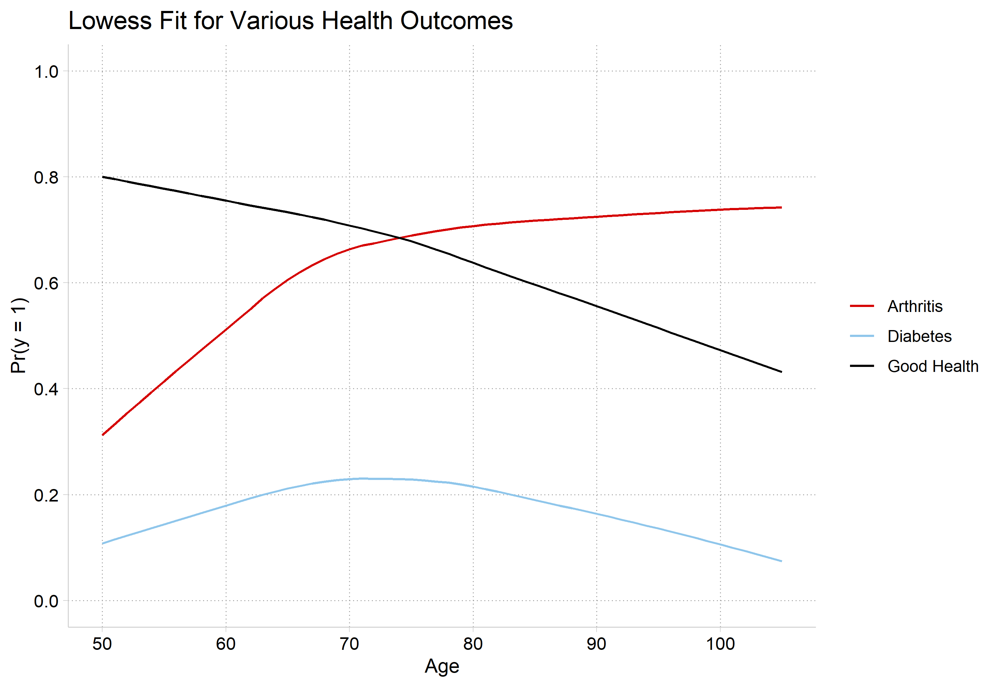
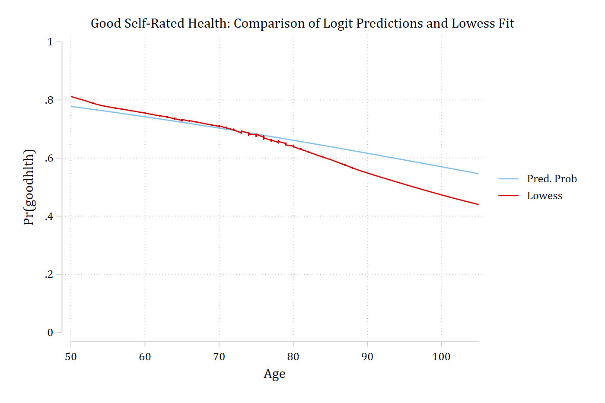
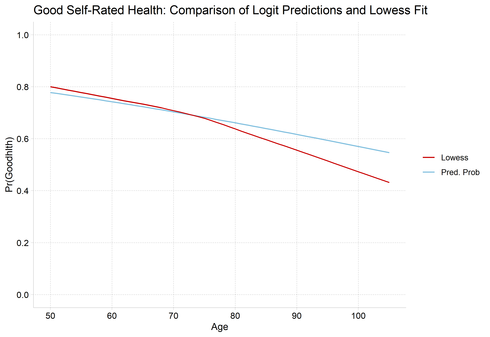
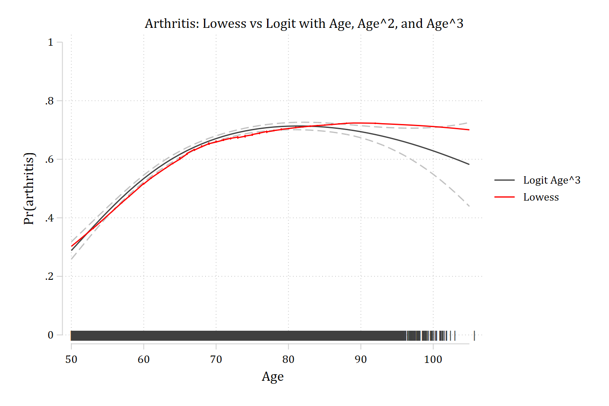
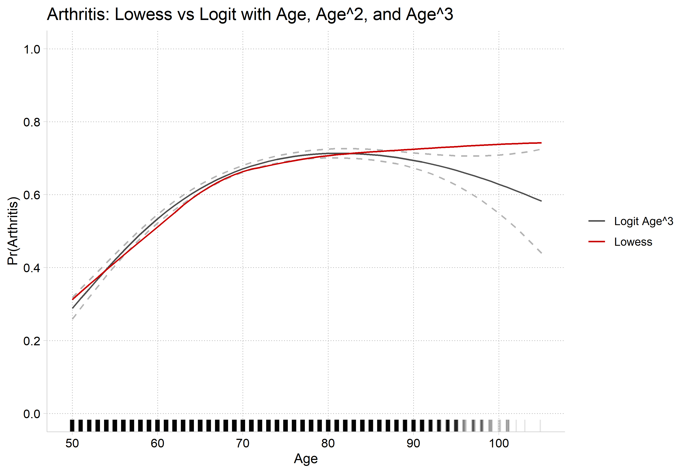
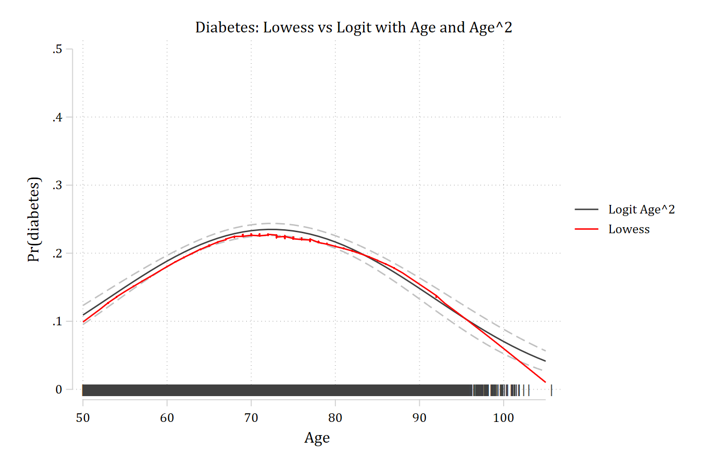
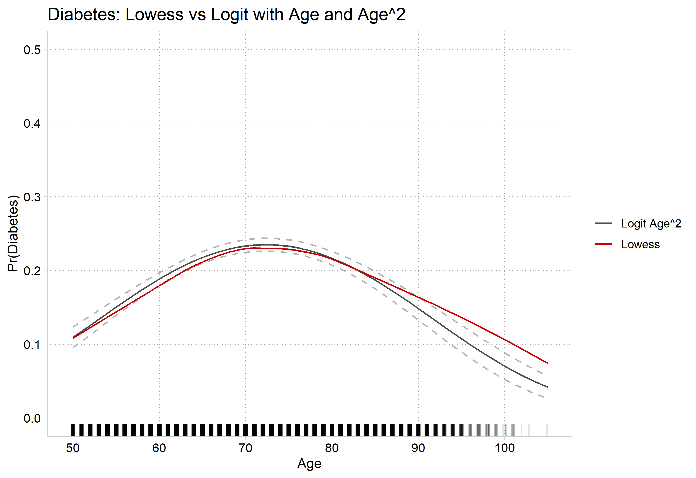

x and x2 are linked since you when x changes x2 must change
If x=1, then x2=1
If x=2, then x2=4
If x=10, then x2=100
With polynomials as IVs, you are not limited to probabilities that uniformly increase or uniformly decrease with x
You also allow the probability to not go all the way to 1 and/or not go all the way to 0
As in linear regression, the significance test on the x2 coefficient determines whether adding the squared term explains additional variation (i.e. whether you have statistical evidence to keep it in the model)
Determining exactly what effect the squared term has on the predicted probabilities is difficult to determine without graphing the predictions
Front view of logit with x and x2

Side view of logit with x and x2

*Remember that where your data falls on the curve will vary—so you may only see part of this relationship for your specific model in your specific dataset
Lowess for assessing nonlinearities
Lowess plots show a moving average of y as x changes
When a continuous IV is potentially important, a lowess is an essential first step
It is very difficult to suss out the correct functional form in logit/probit models without flexible exploratory methods such as lowess
Examples below from HRS: The Health and Retirement Study 2006
We have three different DVs of interest:
arthritis
1=arthritis
0=no arthritis
diabetes
1=has diabetes
0=no diabetes
goodhlth
1=good self-rated health
0=not good
Age has a qualitatively different effect on each outcome
library(haven) # import Stata data and labelslibrary(dplyr) # data manipulationlibrary(ggplot2) # graphslibrary(marginaleffects) # predictions and marginal effectslibrary(cleanplots) # graph schemecleanplots_defaults()# Health & Retirement Study 2006hrs <-read_dta("https://tdmize.github.io/data/data/hrs06.dta")# Listwise deletion for model vars; only examining older adultshrs <- hrs[complete.cases(hrs[c("arthritis", "diabetes", "goodhlth", "age", "woman","ed4cat", "race")]), ]hrs <- hrs |>filter(race !=0, age >=50) |>mutate(female =as_factor(female), ed4cat =as_factor(ed4cat), race =as_factor(race)) |>droplevels()# lowess for all threelowarth <-as.data.frame(lowess(hrs$age, hrs$arthritis, f =0.7, iter =0))lowdiab <-as.data.frame(lowess(hrs$age, hrs$diabetes, f =0.7, iter =0))lowgh <-as.data.frame(lowess(hrs$age, hrs$goodhlth, f =0.7, iter =0))lows <-bind_rows(Arthritis = lowarth, Diabetes = lowdiab, "Good Health"= lowgh,.id ="outcome")ggplot(lows, aes(x = x, y = y, color = outcome)) +geom_line() +scale_y_continuous(breaks =seq(0, 1, 0.2), limits =c(0, 1)) +scale_x_continuous(breaks =seq(50, 105, 10)) +labs(title ="Lowess Fit for Various Health Outcomes",x ="Age", y ="Pr(y = 1)", color =NULL)

How to model these functional forms with logit/probit?
First, recognize that lowess shows a bivariate relationship—you also want to consider how the relationship will be affected after conditioning on other variables
Plot predictions from your full model and compare to lowess
Plots below control for gender, education, and race
If necessary, explore polynomials or other transformations of your IVs
Can also consider the “treat a coarsened version of your continuous IV as nominal” approach we discussed at the end of the 02-Nonlinear Linear Regression notes
This approach has the benefit of allowing control variables
* Good Health (self-rated)quilogit goodhlth c.age i.female i.ed4cat i.racequi margins, at(age=(50(1)105))marginsplot, noci plotopts(msym(none) lcol(eltblue)) ///addplot(connected lowgh age, sort ylab(0(0.2)1) xlab(50(10)105) /// msym(none) lcol(red*1.2) legend(order(1 "Pred. Prob" 2 "Lowess")) ///title("Good Self-Rated Health: Comparison of Logit Predictions and Lowess Fit"))
Variables that uniquely identify margins: age

# Good Health (self-rated)gh1 <-glm(goodhlth ~ age + female + ed4cat + race,family =binomial(link ="logit"), data = hrs)gh1_prs <-avg_predictions(gh1, by ="age",newdata =datagrid(age =50:105, grid_type ="counterfactual"))ggplot() +geom_line(data = gh1_prs, aes(x = age, y = estimate, color ="Pred. Prob")) +geom_line(data = lowgh, aes(x = x, y = y, color ="Lowess")) +scale_color_manual(values =c("Pred. Prob"="#82C0DF", "Lowess"="#C80000")) +scale_y_continuous(breaks =seq(0, 1, 0.2), limits =c(0, 1)) +scale_x_continuous(breaks =seq(50, 105, 10)) +labs(title ="Good Self-Rated Health: Comparison of Logit Predictions and Lowess Fit",x ="Age", y ="Pr(Goodhlth)", color =NULL)

Logit models for arthritis
Models shown below are estimated with controls for gender, education, and race
Three models are estimated with:
age
ageage2
age age2age3
Predicted probabilities across observed values of age in the sample are plotted
Compare predictions to lowess plot
mgen is an SPost command for making predictions that can then be plotted. marginsplot is generally easier to work with, but some cases require a more flexible approach like mgen
* Preferred Model with CIs and Rug Plotquilogit arthritis c.age##c.age##c.age i.female i.ed4cat i.racecapturedrop pipe wheregen pipe = "|"if age != . // What rug looks likegen age2 = age + runiform()gen where = 0.0 // Where on y-axis to put 1st rugqui margins, at(age=(50(1)105))marginsplot, recastci(rline) ciopts(lpat(dash) col(gs12)) /// plotopts(msym(none) lcol(gs4)) ///addplot(scatter where age2, /// ms(none) mlabel(pipe) mlabcol(gs4) mlabpos(0) || /// connected lowarth age, sort/// ms(none) lcol(red) lpat(solid) ylab(0(0.2)1) xlab(50(10)105) ///legend(order(2 "Logit Age^3" 4 "Lowess"))) ///title("Arthritis: Lowess vs Logit with Age, Age^2, and Age^3")
Variables that uniquely identify margins: age

# Preferred Model with CIs and Rug Plotarth3_prs <-filter(arth_prs, model =="Cubic Age")ggplot() +geom_line(data = arth3_prs, aes(x = age, y = estimate, color ="Logit Age^3")) +geom_line(data = arth3_prs, aes(x = age, y = conf.low), linetype ="dashed", color ="gray70") +geom_line(data = arth3_prs, aes(x = age, y = conf.high), linetype ="dashed", color ="gray70") +geom_line(data = lowarth, aes(x = x, y = y, color ="Lowess")) +geom_rug(data = hrs, aes(x =jitter(age)), sides ="b", alpha =0.1) +scale_color_manual(values =c("Logit Age^3"="gray30", "Lowess"="#C80000")) +scale_y_continuous(breaks =seq(0, 1, 0.2), limits =c(0, 1)) +scale_x_continuous(breaks =seq(50, 105, 10)) +labs(title ="Arthritis: Lowess vs Logit with Age, Age^2, and Age^3",x ="Age", y ="Pr(Arthritis)", color =NULL)

Interpreting effects with polynomial IVs
Interpreting the models is no more difficult now than it already was: the model was already nonlinear; now it is just nonlinear with a different functional form
Estimate Std. Error z Pr(>|z|) S 2.5 % 97.5 %
-0.0654 0.0346 -1.89 0.0582 4.1 -0.133 0.00228
Term: age
Type: response
Comparison: 100 - 90
A 10 year increase in age increases the predicted probability of having arthritis by about 0.25 for someone who is 50 years old; however, the same 10 year increase in age has no effect on the probability of having arthritis for someone who is 90 years old
* Preferred Model with CIs and Rug Plotquilogit diabetes c.age##c.age i.female i.ed4cat i.raceeststore diabmodqui margins, at(age=(50(1)105))marginsplot, recastci(rline) ciopts(lpat(dash) col(gs12)) /// plotopts(msym(none) lcol(gs4)) ///addplot(scatter where age2, /// ms(none) mlabel(pipe) mlabcol(gs4) mlabpos(0) || /// connected lowdiab age, sort/// ms(none) lcol(red) lpat(solid) ylab(0(0.1).5) xlab(50(10)105) ///legend(order(2 "Logit Age^2" 4 "Lowess"))) ///title("Diabetes: Lowess vs Logit with Age and Age^2")
Variables that uniquely identify margins: age

# Preferred Model with CIs and Rug Plotdiab2_prs <-filter(diab_prs, model =="Quadratic Age")ggplot() +geom_line(data = diab2_prs, aes(x = age, y = estimate, color ="Logit Age^2")) +geom_line(data = diab2_prs, aes(x = age, y = conf.low), linetype ="dashed", color ="gray70") +geom_line(data = diab2_prs, aes(x = age, y = conf.high), linetype ="dashed", color ="gray70") +geom_line(data = lowdiab, aes(x = x, y = y, color ="Lowess")) +geom_rug(data = hrs, aes(x =jitter(age)), sides ="b", alpha =0.1) +scale_color_manual(values =c("Logit Age^2"="gray30", "Lowess"="#C80000")) +scale_y_continuous(breaks =seq(0, 0.5, 0.1), limits =c(0, 0.5)) +scale_x_continuous(breaks =seq(50, 105, 10)) +labs(title ="Diabetes: Lowess vs Logit with Age and Age^2",x ="Age", y ="Pr(Diabetes)", color =NULL)

Interpreting effects with polynomial IVs
Because of the nature of the effect of age on Pr(diabetes), this is a case where you might not want to report the average at all (i.e. the effect appears positive for some; no effect for some; negative for others)
logit: Changes in Pr(y) | Number of obs = 17007
Expression: Pr(diabetes), predict(pr)
| Change p-value
-------------+---------------------
age |
+delta | 0.079 0.000
Average predictions
| no diabetes
-------------+---------------------
Pr(y|base) | 0.891 0.109
Base values of regressors
| age
-------------+----------
at | 50
1: Delta equals 10.
mchange age, at(age=70) delta(10) amount(delta)
logit: Changes in Pr(y) | Number of obs = 17007
Expression: Pr(diabetes), predict(pr)
| Change p-value
-------------+---------------------
age |
+delta | -0.017 0.000
Average predictions
| no diabetes
-------------+---------------------
Pr(y|base) | 0.767 0.233
Base values of regressors
| age
-------------+----------
at | 70
1: Delta equals 10.
mchange age, at(age=90) delta(10) amount(delta)
logit: Changes in Pr(y) | Number of obs = 17007
Expression: Pr(diabetes), predict(pr)
| Change p-value
-------------+---------------------
age |
+delta | -0.078 0.000
Average predictions
| no diabetes
-------------+---------------------
Pr(y|base) | 0.852 0.148
Base values of regressors
| age
-------------+----------
at | 90
1: Delta equals 10.
# +10 years, starting from age 50, 70, and 90avg_comparisons(diab2, variables =list(age =c(50, 60)))
Estimate Std. Error z Pr(>|z|) S 2.5 % 97.5 %
0.0792 0.00518 15.3 <0.001 173.1 0.069 0.0893
Term: age
Type: response
Comparison: 60 - 50
Estimate Std. Error z Pr(>|z|) S 2.5 % 97.5 %
-0.078 0.00307 -25.4 <0.001 471.5 -0.084 -0.072
Term: age
Type: response
Comparison: 100 - 90
Example write-up of complex nonlinear relationship
Age has a highly nonlinear effect on the predicted probability of having diabetes (n.b all models control for gender, race, and education). As shown in Figure #, the probability of having diabetes increases steadily from age 50 to around age 75, but then reverses, with aging associated with a decreasing probability of diabetes at older ages. For example, for a 50 year old, a 10 year increase in age increases the predicted probability of diabetes by about 0.08 (averaging over all observations). In contrast, a 10 year increase in age has a very small effect on the probability of diabetes for someone who is 70 (∆ = -0.02). However, for someone who is 90, the effect of age is again large but now negative—with a 10 year increase in age decreasing the probability of diabetes by about 0.08.
General Tips
Always include a plot for effects that are nonlinear
Start by describing the general pattern in nontechnical terms
Next, add specific details such as effect sizes based on marginal effects and (optionally) information on statistical significance